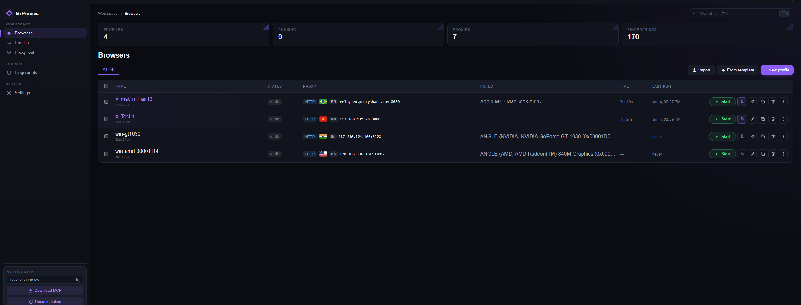
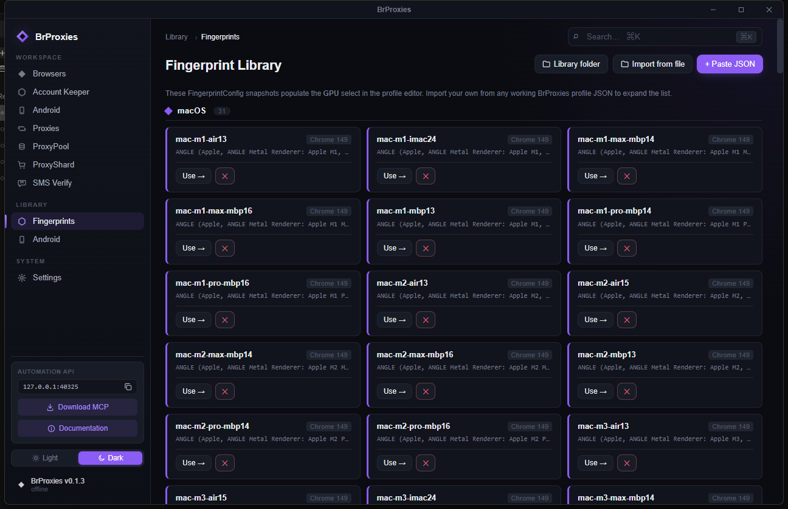
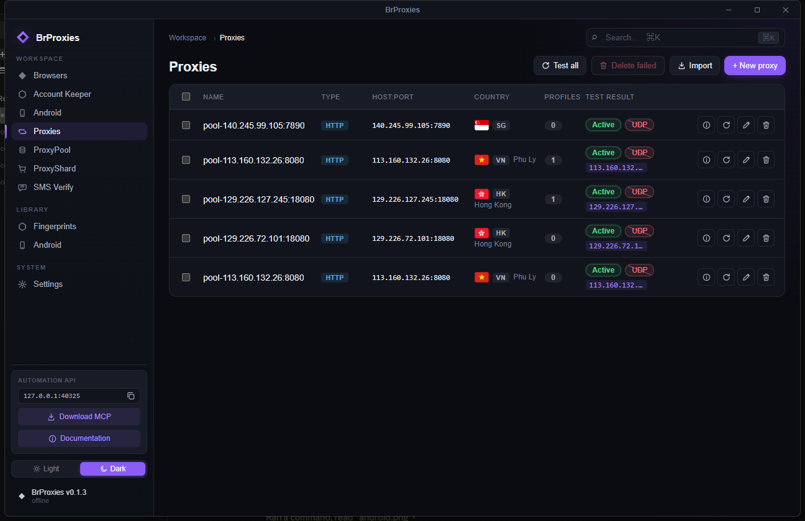
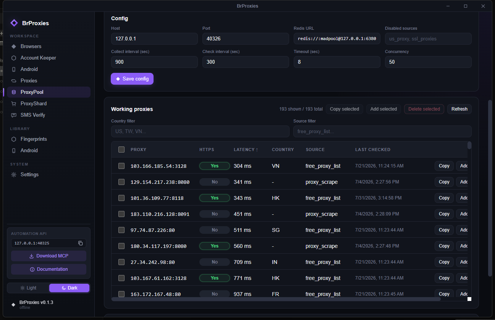
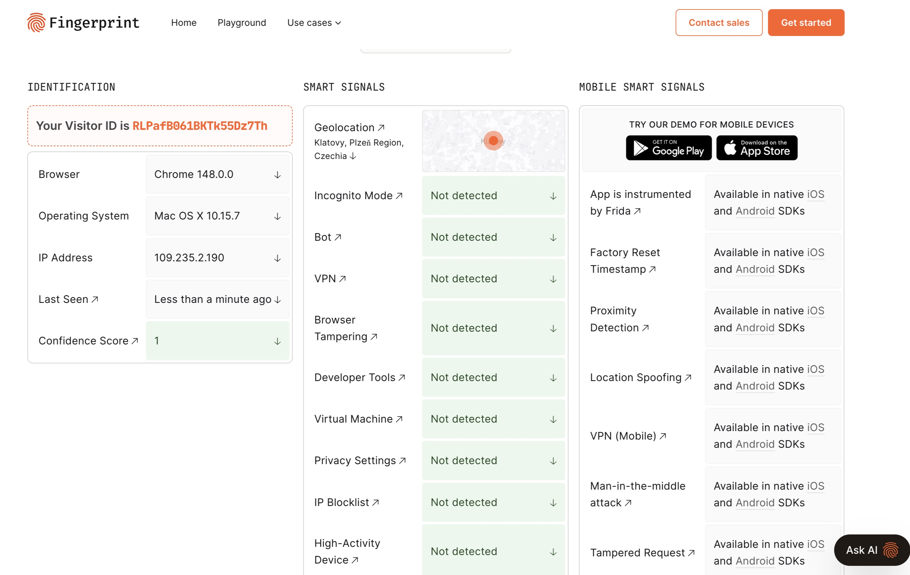
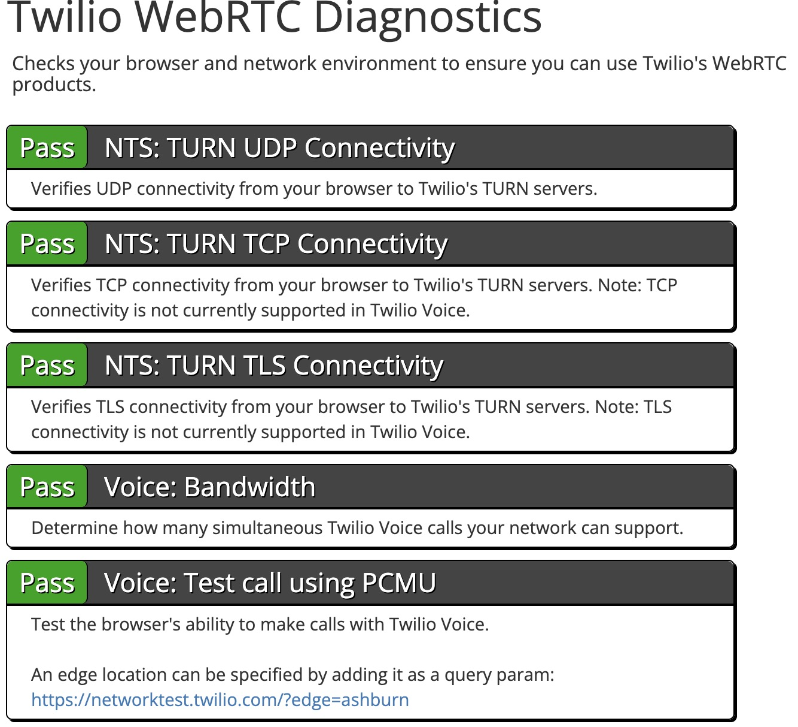
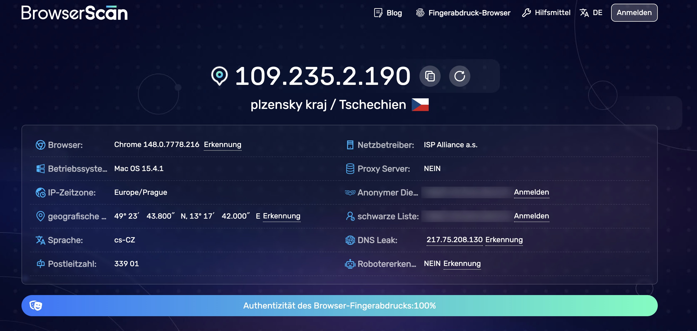
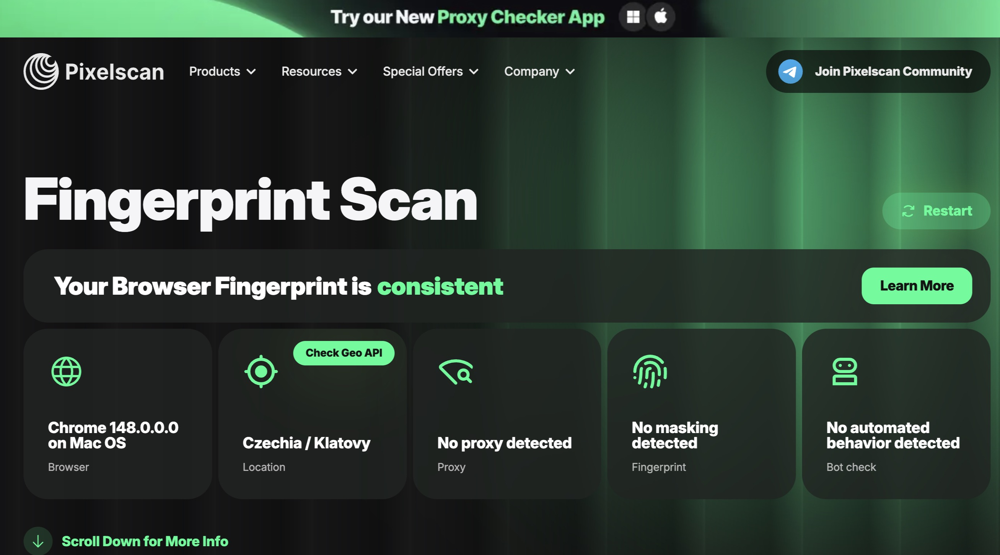
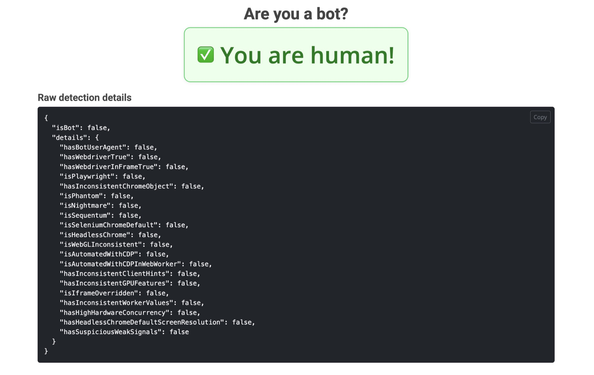
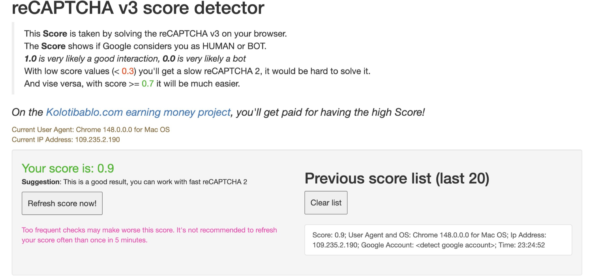

Local browser profile launcher
Profiles, fingerprints, proxy checks, and crawler proxy pooling in one app.
BrProxies is a personal fork of ProxyShard's ShardX Launcher. It keeps the desktop profile workflow, local automation API, MCP/SDK surfaces, and adds a Redis-backed ProxyPool for collecting and rechecking public proxies.

Profiles
Isolated browser identities with folders, tags, clone, pin, and launch controls.
Fingerprints
Device, screen, WebGL/WebGPU, locale, timezone, WebRTC, media, and noise controls.
Proxies
HTTP, HTTPS, SOCKS5, geo lookup, TCP checks, UDP checks, and profile binding.
ProxyPool
Public proxy collection, Redis storage, scheduled rechecks, and promotion into Proxies.
Main screens
These screenshots were moved into docs/screenshots so README and this guide share one image location.



Validation screenshots






Quick start
Use the bundled Windows scripts for the shortest path. The run script starts bundled Windows Redis for ProxyPool persistence.
"smart launch\build.bat"
"smart launch\run.bat"Build
Run smart launch\build.bat after cloning or after dependency changes.
Run app
Run smart launch\run.bat. It starts Redis, stops stale ProxyPool sidecars, then opens BrProxies.
ProxyPool workflow
ProxyPool is separate from the main Proxies tab. Collect and check candidates first, then promote only working proxies into profile use.
Collect and recheck
- Open ProxyPool and click Connect.
- Use Collect now to crawl enabled public sources.
- Use Check now or Refresh to recheck stored proxies.
- Use Clean to clear all cached ProxyPool IPs from Redis.
Promote proxies
- Filter working rows by country or source.
- Copy a working proxy string when you need raw output.
- Select multiple rows, then use Copy selected, Add selected, or Delete selected for batch actions.
- Use Add or Add selected to push rows into the main Proxies tab; promoted rows are removed from Redis.
- Add custom sources with parser type
text,table, orgeonode_json.
Local APIs
BrProxies has two local surfaces: launcher automation on 127.0.0.1:40325 and ProxyPool on 127.0.0.1:40326.
GET /healthProxyPool service and Redis health.GET /proxy/randomReturn one random working proxy, with optional HTTPS filter.GET /proxy/popReturn and remove one working proxy.GET /proxiesList working proxies with country, source, HTTPS support, latency, and last check time.POST /cleanClear all cached ProxyPool IPs.POST /jobs/collectQueue a proxy collection job.POST /jobs/checkQueue a recheck job for stored proxies.POST /sourcesAdd a custom public proxy source.